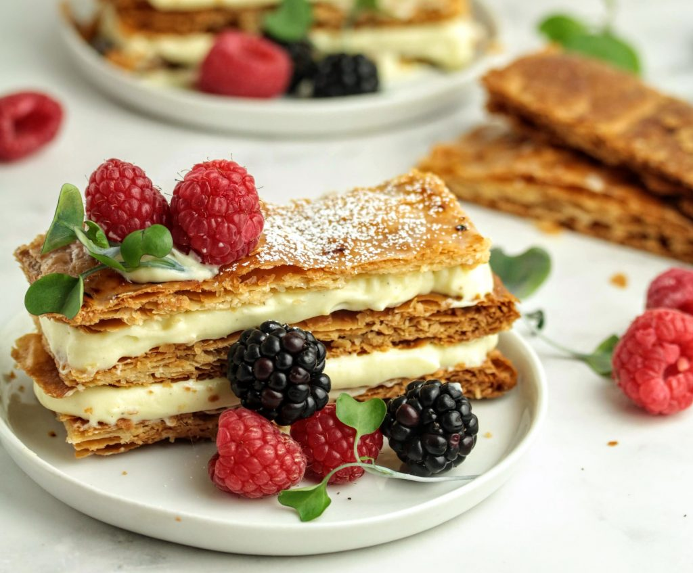

Mille-Feuille (also known as Napoleon) is a classic French pastry made up of layers of crispy puff pastry and smooth pastry cream, often topped with a beautiful glaze. It’s a delicate dessert with a perfect balance of textures. Here's a recipe with some tips to ensure success.

Mille-Feuille Recipe
Ingredients
For the Puff Pastry:
- 1 pound (450 g) puff pastry (store-bought or homemade)
- Powdered sugar (for dusting)
For the Pastry Cream:
- 2 cups (500 ml) whole milk
- 1/2 cup (100 g) granulated sugar
- 5 large egg yolks
- 1/4 cup (30 g) cornstarch
- 2 teaspoons vanilla extract (or 1 vanilla bean)
- 2 tablespoons (30 g) unsalted butter
For the Icing:
- 1 cup (125 g) powdered sugar
- 2–3 tablespoons water
- 1/4 cup (30 g) dark chocolate (for the chocolate lines)